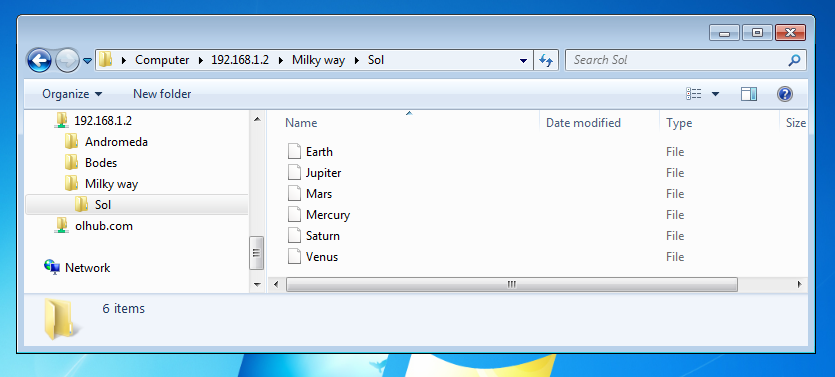

In the next 5-10 minutes we'll build a milton web application in eclipse, using maven, which has simple folder and file browsing. The next modules will show how to implement file operations like moving, deleting, copying etc
In this tutorial we'll be simulating a database of galaxies, solar systems and planets. This is intended to be a simple example of a business application with relational data that can be represented in a hierarchial view. Note that we won't actually be using a database, for simplicity we'll just hold data in memory.
In a few minutes time you'll be looking at something like this running on your own machine:

The full source code for these tutorials is in github
Click the next button below to continue